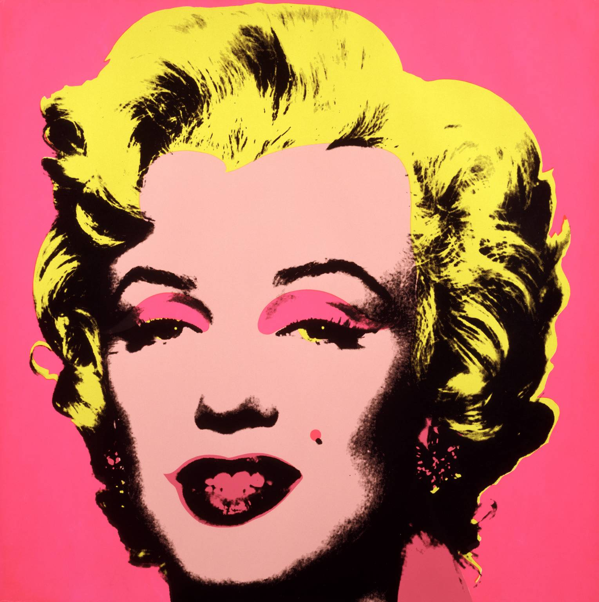
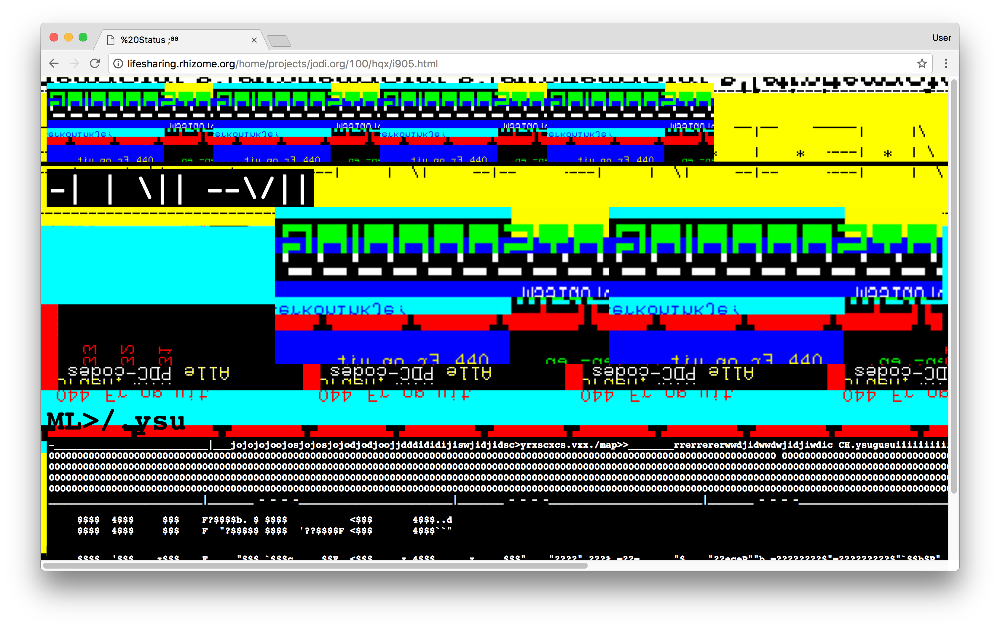
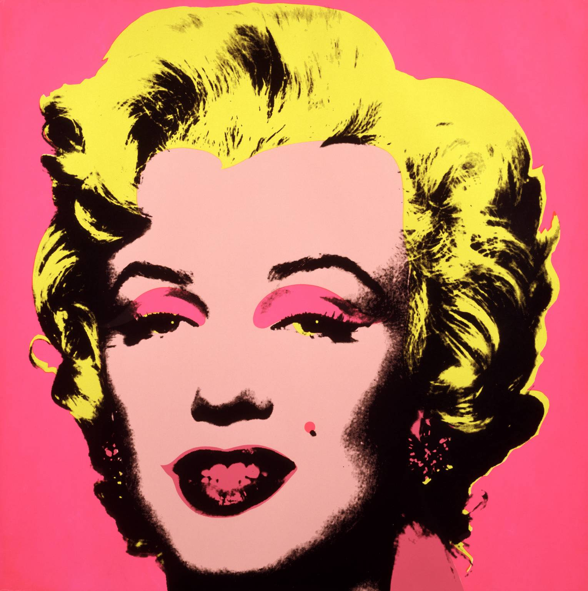
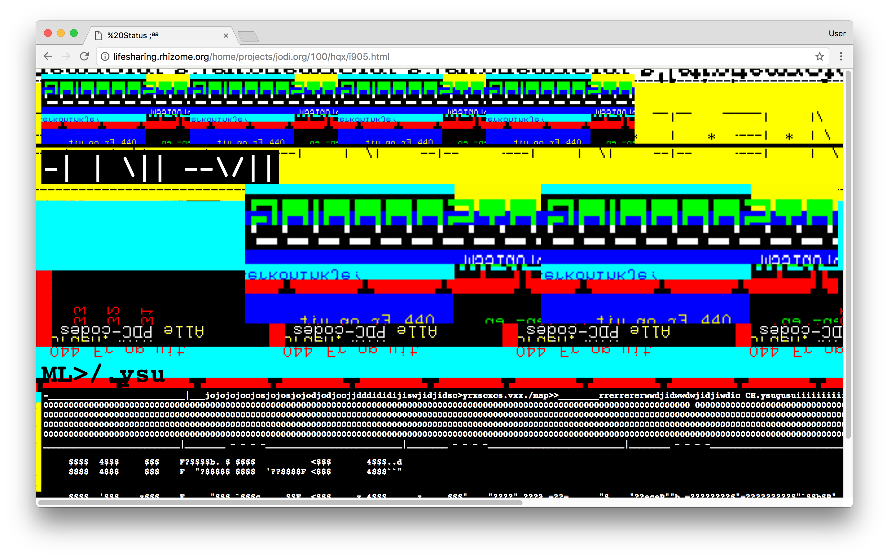

“All production is appropriation of nature on the part of an individual within and through a specific form of society. In this sense it is a tautology to say that property (appropriation) is a precondition of production.”
In Praise of Copying 2013, Marcus Boon
SUMÁRIO:
Este projeto ir-se-á dividir em três partes, sendo que a pri-meira terá como propósito ser um guia que explora o tema da apropriação, cópia, citação ou contrafacção na arte. A segunda parte, por seu lado, pretende ser um léxico, no qual poderemos encontrar e compreender melhor os vários signi-ficados das palavras acima destacadas. Por ultimo, na ter-ceira, serão expostos vários exemplos de projetos que uti-lizam a técnica da apropriação, bem como os artistas e designers que a utilizam no seu processo criativo.
OBJETIVOS:
- apresentar a nova estética que nasceu na era de pós-internet;
- compreender os diferentes significados da palavra apro-priação assim como a forma como o seu significado afeta o seu uso;
- explorar as técnicas de apropriação existentes na Web - apropriação, cópia, colagem, remix, repetição, compila-ção, etc. - bem como saber a forma como as mesmas são utilizadas;
- investigar como os artistas e designers têm utilizado conscientemente a apropria-ção no seu trabalho;
- prestar homenagem aos criadores que utilizam essa técnica.
METODOLOGIA:
- recolha de textos que apresentem e explorem a evolução da técnica da apropriação ao longo do tempo, nas artes em geral e no design em particular;
- investigação, compilação e edição dos textos e das refe-rências relacionadas com o tema;
- exemplificação/ utilização das técnicas de apropriação no projeto por forma a demonstrar como as mesmas podem ser úteis na configuração de artefactos, em específico na Web.
RESULTADO:
O resultado previsto pretende ser a criação de um objeto que irá promover uma discussão sobre o que a técnica da apropriação pode modificar/ alterar um objeto, uma vez que é um método criativo utilizado na arte de design em especí-fico. Esse resultado será alcançado depois de entender como funciona esta técnica com a análise de exemplo de objetos variados por forma a constatar como a apropriação é usada por diversos artistas. Assim, com a exemplificação desta técnica e a criação do objeto apresentado pretende-se promover uma reflexão sobre como a apropriação está intrínseca na criação de artefactos numa era pós-internet.
REFERÊNCIAS:
Img1- Screenshot de Life Sharing archives, %Transfer IHQX (1998); Img2- Fotografia de Marcel Duchamp ADAGP créditos Tate; Img3- Marilyn Monroe de Andy Warhol; Gif1- Search by Image de Sebastian Schmieg, 2011; Gif2- Versions de Oliver Laric, 2010

 


